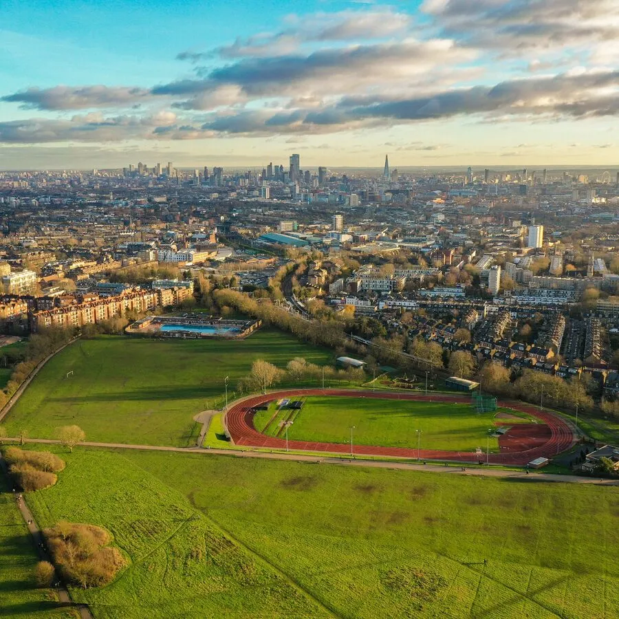

🗓️ Possible Itinerari (4 dies)
- Dia 1: Arribada. Passeig per Oxford St i Regent St per veure els llums. Sopar a Covent Garden.
- Dia 2: Matí cultural (ex: British Museum). Tarda i vespre a Winter Wonderland a Hyde Park (atraccions, mercat, menjar).
- Dia 3: Passeig per Southbank (mercat de Nadal al costat del riu), London Eye. Tarda: Patinar sobre gel a Somerset House.
- Dia 4: Matí al mercat de Portobello (Notting Hill) o Camden. Vol de tornada.
🚶 Excursió de Natura
Passeig per Hampstead Heath. S'hi arriba fàcilment amb metro (Northern Line) i ofereix vistes increïbles de la ciutat, camins, boscos i la sensació d'estar fora de la ciutat.

🎁 Mercats de Nadal
- Winter Wonderland (Hyde Park): El més gran i espectacular.
- Southbank Centre Winter Market: Més relaxat, al costat del riu.
- Christmas at Leicester Square: Petit però molt cèntric.
- Covent Garden Christmas Market: Ambient nadalenc i compres, tapat.
- Trafalgar Square Christmas Market: Amb l'arbre per gaudir i corals a la plaça.
🏨 Estada i Pressupost (Orientatiu)
Dates: 28 de Novembre - 1 de Desembre
- ✈️ Vols (BCN-LON): ~ 100€ - 180€ (anar i tornar)
-
🏨 Hotel:
- Apartament Roomzzz
- 🏠 Apartaments (Airbnb/Booking): Més varietat, bona opció per estalviar en àpats. (~160-250€/nit)